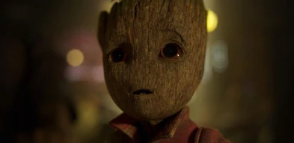
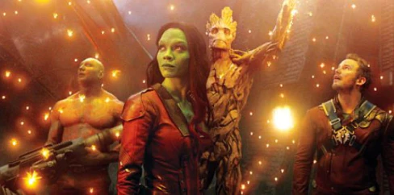

LES GARDIENS DE L’ÉCOLOGIE

Les gardiens de la galaxie sont une équipe de héros composée de Star Lord, Groot, Gamora, Rocket, Drax et Nébula. Ces déglingos de l'espace parcourent l'univers afin de le protéger et d'y faire justice. Malheureusement cela laisse parfois quelques traces dans les multiples mondes qu'ils visitent (si ça n'entraine pas leur totale... disparition). En effet
Lire la suiteLes Gardiens, des Héros qui n'ont pas ( tous ) la main verte

Les gardiens de la galaxie sont-ils vraiment des héros ? Sûrement pas pour l’écologie ! Il devient urgent de se pencher sur leurs délits.
Lire la suitePollution automobile et bilan Co2
Tandis que nos gardiens parcourent des kilomètres avec leur vaisseau, le Co2 devient de plus en plus présent dans notre atmosphère.
Lire la suiteComment combattre le Co2 émis par les gardiens ?
Heureusement pour nous, nous disposons aujourd’hui de nombreux moyens pour lutter contre le réchauffement climatique. En voici quelques-uns.
Lire la suite